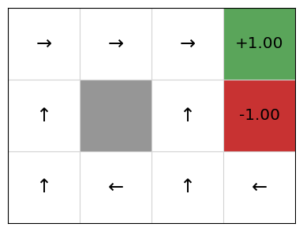
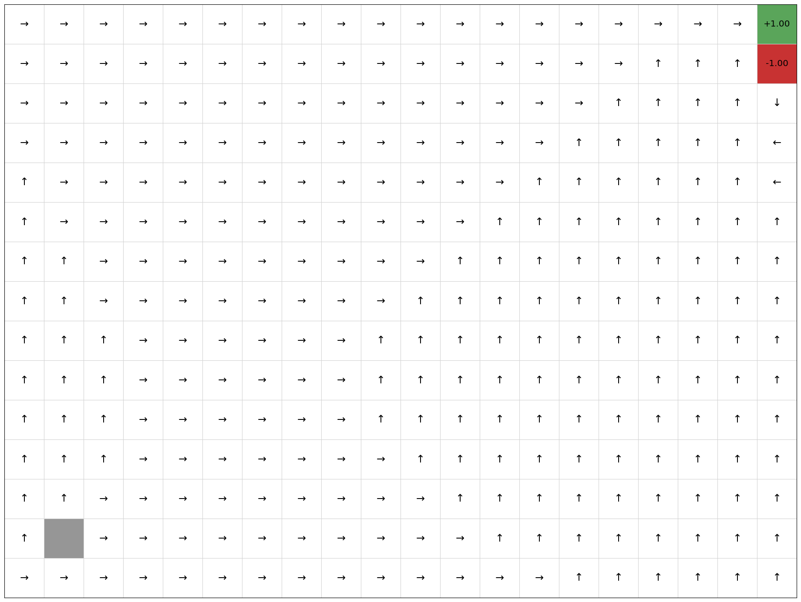

Policy iteration#
Learning outcomes
The learning outcomes of this chapter are:
Apply policy iteration to solve small-scale MDP problems manually and program policy iteration algorithms to solve medium-scale MDP problems automatically.
Discuss the strengths and weaknesses of policy iteration.
Compare and contrast policy iteration to value iteration.
Overview#
The other common way that MDPs are solved is using policy iteration – an approach that is similar to value iteration. While value iteration iterates over value functions, policy iteration iterates over policies themselves, creating a strictly improved policy in each iteration (except if the iterated policy is already optimal).
Policy iteration first starts with some (non-optimal) policy, such as a random policy, and then calculates the value of each state of the MDP given that policy — this step is called policy evaluation. It then updates the policy itself for every state by calculating the expected reward of each action applicable from that state.
The basic idea here is that policy evaluation is easier to computer than value iteration because the set of actions to consider is fixed by the policy that we have so far.
Policy evaluation#
An important concept in policy iteration is policy evaluation, which is an evaluation of the expected reward of a policy.
The expected reward of policy \(\pi\) from \(s\), \(V^\pi(s)\), is the weighted average of reward of the possible state sequences defined by that policy times their probability given \(\pi\).
Definition – Policy evaluation
Policy evaluation can be characterised as \(V^{\pi}(s)\) as defined by the following equation:
where \(V^\pi(s)=0\) for terminal states.
Note that this is very similar to the Bellman equation, except \(V^\pi(s)\) is not the value of the best action, but instead just as the value for \(\pi(s)\), the action that would be chosen in \(s\) by the policy \(\pi\). Note the expression \(P_{\pi(s)}(s' \mid s)\) instead of \(P_a(s' \mid s)\), which means we only evaluate the action that the policy defines.
Once we understand the definition of policy evaluation, the implementation is straightforward. It is the same as value iteration except that we use the policy evaluation equation instead of the Bellman equation.
Algorithm 10 (Policy evaluation)
\( \begin{array}{l} \alginput:\ \pi\ \text{the policy for evaluation}, V^\pi\ \text{value function, and}\\ \quad\quad\quad\quad \text{MDP}\ M = \langle S, s_0, A, P_a(s' \mid s), r(s,a,s')\rangle\\ \algoutput:\ \text{Value function}\ V^\pi\\[2mm] \algrepeat\\ \quad\quad \Delta \leftarrow 0\\ \quad\quad \algforeach\ s \in S\\ \quad\quad\quad\quad \underbrace{V'^{\pi}(s) \leftarrow \sum_{s' \in S} P_{\pi(s)}(s' \mid s)\ [r(s,a,s') + \gamma\ V^\pi(s') ]}_{\text{Policy evaluation equation}}\\ \quad\quad\quad\quad \Delta \leftarrow \max(\Delta, |V'^\pi(s) - V^\pi(s)|)\\ \quad\quad V^\pi \leftarrow V'^\pi\\ \alguntil\ \Delta \leq \theta \end{array} \)
The optimal expected reward \(V^*(s)\) is \(\max_{\pi} V^\pi(s)\) and the optimal policy is \(\textrm{argmax}_{\pi} V^\pi(s)\).
Policy improvement#
If we have a policy and we want to improve it, we can use policy improvement to change the policy (that is, change the actions recommended for states) by updating the actions it recommends based on \(V(s)\) that we receive from the policy evaluation.
Let \(Q^{\pi}(s,a)\) be the expected reward from \(s\) when doing \(a\) first and then following the policy \(\pi\). Recall from the chapter on Markov Decision Processes that we define define this as:
In this case, \(V^{\pi}(s')\) is the value function from the policy evaluation.
If there is an action \(a\) such that \(Q^{\pi}(s,a) > Q^{\pi}(s,\pi(s))\), then the policy \(\pi\) can be strictly improved by setting \(\pi(s) \leftarrow a\). This will improve the overall policy.
Policy iteration#
Pulling together policy evaluation and policy improvement, we can define policy iteration, which computes an optimal \(\pi\) by performing a sequence of interleaved policy evaluations and improvements:
Algorithm 11 (Policy iteration)
\( \begin{array}{l} \alginput:\ \text{MDP}\ M = \langle S, s_0, A, P_a(s' \mid s), r(s,a,s')\rangle\\ \algoutput:\ Policy\ \pi\\[2mm] \text{Set}\ V^\pi\ \text{to arbitrary value function; e.g.,}\ V^\pi(s)=0\ \text{for all}\ s\\ \text{Set}\ \pi\ \text{to arbitrary policy; e.g.}\ \pi(s) = a\ \text{for all}\ s,\ \text{where}\ a \in A\ \text{is an arbitrary action}\\[2mm] \algrepeat\\ \quad\quad \text{Compute}\ V^\pi(s)\ \text{for all}\ s\ \text{using policy evaluation}\\ \quad\quad \algforeach\ s \in S\\ \quad\quad\quad\quad \pi(s) \leftarrow \textrm{argmax}_{a \in A(s)}Q^{\pi}(s,a)\\ \alguntil\ \pi\ \text{does not change} \end{array} \)
The policy iteration algorithm finishes with an optimal \(\pi\) after a finite number of iterations, because the number of policies is finite, bounded by \(O(|A|^{|S|})\), unlike value iteration, which can theoretically require infinite iterations.
However, each iteration costs \(O(|S|^2 |A| + |S|^3)\). Empirical evidence suggests that the most efficient is dependent on the particular MDP model being solved, but that surprisingly few iterations are often required for policy iteration.
Implementation#
Below is a Python implementation for policy iteration. In this implementation, the parameter max_iterations is the maximum number of iterations of the policy iteration, and the parameter theta the largest amount the value function corresponding to the current policy can change before the policy evaluation look terminates.
from mastering_rl.policies.tabular_policy import TabularPolicy
from mastering_rl.qfunctions.qtable import QTable
from mastering_rl.value_functions.tabular_value_function import TabularValueFunction
class PolicyIteration:
def __init__(self, mdp, policy):
self.mdp = mdp
self.policy = policy
def policy_evaluation(self, policy, values, theta=0.001):
while True:
delta = 0.0
new_values = TabularValueFunction()
for state in self.mdp.get_states():
# Calculate the value of V(s)
actions = self.mdp.get_actions(state)
old_value = values.get_value(state)
new_value = values.get_q_value(
self.mdp, state, policy.select_action(state, actions)
)
values.add(state, new_value)
delta = max(delta, abs(old_value - new_value))
# terminate if the value function has converged
if delta < theta:
break
return values
""" Implmentation of policy iteration iteration. Returns the number of iterations executed """
def policy_iteration(self, max_iterations=100, theta=0.001):
# create a value function to hold details
values = TabularValueFunction()
for i in range(1, max_iterations + 1):
policy_changed = False
values = self.policy_evaluation(self.policy, values, theta)
for state in self.mdp.get_states():
actions = self.mdp.get_actions(state)
old_action = self.policy.select_action(state, actions)
q_values = QTable(alpha=1.0)
for action in self.mdp.get_actions(state):
# Calculate the value of Q(s,a)
new_value = values.get_q_value(self.mdp, state, action)
q_values.update(state, action, new_value)
# V(s) = argmax_a Q(s,a)
new_action = q_values.get_argmax_q(state, self.mdp.get_actions(state))
self.policy.update(state, new_action)
policy_changed = (
True if new_action is not old_action else policy_changed
)
if not policy_changed:
return i
return max_iterations
From this, we can see that policy evaluation looks very similar to value iteration. The main differences is in the inner loop: instead of finding the action with the maximum Q-value, we simply find the value of the action that is given the policy: policy.select_action(state).
We can execute this to get the policy:
from mastering_rl.markov_decision_processes.gridworld import GridWorld
from mastering_rl.learners.policy_iteration import PolicyIteration
from mastering_rl.policies.tabular_policy import TabularPolicy
gridworld = GridWorld()
policy = TabularPolicy(default_action=gridworld.LEFT)
PolicyIteration(gridworld, policy).policy_iteration(max_iterations=100)
gridworld.visualise_policy(policy)

We can see that this matches the optimal policy according to value iteration.
Let’s look at the policies that are generated after each iteration, noting that the initial policy is defined by taking a random action (left) and using that for every state:

We can see that this converges in just four iterations. Let’s try on a larger state space of a 20 x 15 grid:
gridworld = GridWorld(width=20, height=15)
policy = TabularPolicy(default_action=gridworld.LEFT)
iterations = PolicyIteration(gridworld, policy).policy_iteration(max_iterations=100)
print("Number of iterations until convergence: %d" % (iterations))
gridworld.visualise_policy(policy)
Number of iterations until convergence: 18

This terminates in 5 iterations. We can see that the policy is optimal as it always directs the agent to terminating state at (3,2) with the positive reward. However, the number of iterations can change depending on the initial policy and the order in which actions are evaluated.
Takeaways#
Takeaways
Policy iteration is a dynamic programming technique for calculating a policy directly, rather than calculating an optimal \(V(s)\) and extracting a policy; but one that uses the concept of values.
It produces an optimal policy in a finite number of steps.
Similar to value iteration, for medium-scale problems, it works well, but as the state-space grows, it does not scale well.